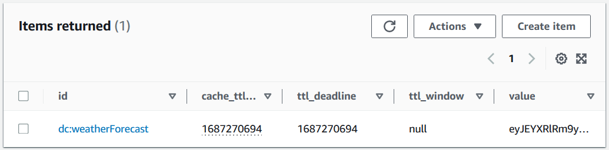

AWS .NET Distributed Cache Provider cho Amazon DynamoDB hiện đã khả dụng rộng rãi
Tác giả: Garrett Beatty
Ngày xuất bản: 03/07/2025
Chủ đề: .NET, AWS SDK for .NET, Developer Tools…
Hôm nay, chúng tôi vui mừng thông báo về việc phát hành chính thức AWS .NET Distributed Cache Provider cho Amazon DynamoDB. Đây là một giải pháp bộ nhớ đệm (caching) phi máy chủ, liền mạch, cho phép các nhà phát triển .NET quản lý hiệu quả nhu cầu lưu trữ đệm của họ trên các hệ thống phân tán.
Bộ nhớ đệm nhất quán là một vấn đề khó khăn trong các kiến trúc phân tán, nơi việc duy trì tính toàn vẹn dữ liệu và hiệu suất trên nhiều phiên bản ứng dụng có thể rất phức tạp. AWS .NET Distributed Cache Provider cho Amazon DynamoDB giải quyết thách thức này bằng cách tận dụng cơ sở hạ tầng mạnh mẽ và phân tán toàn cầu của DynamoDB để cung cấp một cơ chế lưu trữ đệm đáng tin cậy và có khả năng mở rộng.
AWS .NET Distributed Cache Provider cho DynamoDB là gì?
Provider này triển khai giao diện (interface) IDistributedCache của ASP.NET Core, cho phép bạn tích hợp cơ sở hạ tầng bền bỉ và được quản lý hoàn toàn của DynamoDB vào lớp bộ nhớ đệm của mình với những thay đổi tối thiểu về mã nguồn. Một bộ nhớ đệm phân tán có thể cải thiện hiệu suất và khả năng mở rộng của một ứng dụng ASP.NET Core, đặc biệt khi ứng dụng được lưu trữ bởi một dịch vụ đám mây hoặc một cụm máy chủ (server farm).
Sử dụng Distributed Cache Provider
Hãy xem xét một ứng dụng web ASP.NET Core giả định hiển thị dự báo thời tiết địa phương. Việc tạo ra dự báo có thể tốn kém về mặt tính toán so với việc hiển thị trang, vì vậy bạn muốn lưu trữ đệm dự báo hiện tại trong 24 giờ và chia sẻ dự báo đã lưu trong bộ nhớ đệm trên nhiều máy chủ lưu trữ ứng dụng của bạn.
Để bắt đầu, hãy cài đặt gói (package) AWS.AspNetCore.DistributedCacheProvider từ NuGet.org. Sau đó, cấu hình cache provider trong tệp Program.cs của bạn:
builder.Services.AddAWSDynamoDBDistributedCache(options =>
{
options.TableName = "weather_cache";
options.PartitionKeyName = "id";
options.TTLAttributeName = "cache_ttl";
});
Trong trang web của bạn, hãy tận dụng giao diện IDistributedCache đã được inject để truy xuất dự báo thời tiết đã được lưu trong bộ nhớ đệm. Nếu không có dự báo nào được lưu, ứng dụng sẽ tạo một dự báo mới và lưu trữ nó trong bộ nhớ đệm để sử dụng trong tương lai.
// WeatherForecast.razor
@page "/weatherforecast"
@inject IDistributedCache DistributedCache
<h1>Weather Forecast</h1>
@if (CurrentForecast != null)
{
// Display your forecast data here
}
@code {
private WeatherForecast CurrentForecast;
protected override async Task OnInitializedAsync()
{
// Load the previous weather forecast from the cache
var cachedForecastBytes = await DistributedCache.GetAsync("weatherForecast");
// If there was a cache entry, convert it from the cached bytes
if (cachedForecastBytes != null)
{
CurrentForecast = ForecastConverter.FromBytes(cachedForecastBytes);
}
else
{
// Compute a new forecast
CurrentForecast = WeatherPredictor.GenerateNewForecast();
var options = new DistributedCacheEntryOptions()
{
AbsoluteExpiration = DateTimeOffset.UtcNow.AddHours(24)
};
// Store the new forecast in the cache
await DistributedCache.SetAsync("weatherForecast",
ForecastConverter.ToBytes(CurrentForecast),
options);
}
}
}
Sau khi tải trang này, bạn có thể thấy mục DynamoDB trong bảng. Thuộc tính value chứa dữ liệu dự báo thời tiết đã được tuần tự hóa (serialized). Các thuộc tính cache_ttl, ttl_deadline, và ttl_window được sử dụng nội bộ để hỗ trợ các cài đặt hết hạn khác nhau có sẵn trong đối tượng DistributedCacheEntryOptions.
(Hình 1: Ảnh chụp màn hình hiển thị mục weatherForecast trong bảng DynamoDB)

Cấu hình
Đối với các ứng dụng sản xuất, chúng tôi khuyên bạn nên cấu hình cache provider với các tùy chọn sau:
- TableName – Tên của bảng DynamoDB được sử dụng để lưu trữ dữ liệu bộ nhớ đệm.
- PartitionKeyName – Tên của khóa phân vùng (partition key) của bảng DynamoDB. Nếu tùy chọn này không được đặt, một lệnh gọi dịch vụ
DescribeTablesẽ được thực hiện khi khởi động để xác định tên của khóa phân vùng. - TTLAttributeName – Tính năng Time To Live (TTL) của DynamoDB được sử dụng để xóa các mục bộ nhớ đệm đã hết hạn khỏi bảng. Tùy chọn
TTLAttributeNamechỉ định tên thuộc tính được sử dụng để lưu trữ dấu thời gian TTL. Nếu tùy chọn này không được đặt, một lệnh gọi dịch vụDescribeTimeToLivesẽ được thực hiện để xác định tên của thuộc tính TTL.
Bảng phải sử dụng một khóa phân vùng có kiểu string và không sử dụng khóa sắp xếp (sort key), nếu không một ngoại lệ (exception) sẽ được ném ra trong thao tác lưu trữ đệm đầu tiên. Tính năng Time to Live của DynamoDB phải được bật cho bảng, nếu không các mục bộ nhớ đệm đã hết hạn sẽ không bị xóa.
Các khóa phân vùng của các mục được lưu trong bộ nhớ đệm luôn bắt đầu bằng dc: và có thể được thêm một tiền tố cấu hình bổ sung PartitionKeyPrefix. Điều này có thể giúp tránh xung đột nếu các mục bộ nhớ đệm được trộn lẫn với các mục khác trong một bảng, và cho phép bạn sử dụng các điều kiện chính sách IAM để kiểm soát truy cập chi tiết nhằm giới hạn quyền truy cập chỉ vào các mục bộ nhớ đệm.
Bạn có thể đặt CreateTableIfNotExists thành true để cho phép thư viện tự động tạo bảng nếu nó chưa tồn tại. Điều này chỉ được khuyến nghị cho mục đích phát triển hoặc thử nghiệm vì nó yêu cầu các quyền bổ sung và làm tăng độ trễ cho thao tác lưu trữ đệm đầu tiên.
Tham khảo phần Cấu hình trong tệp README của dự án để biết bộ tùy chọn đầy đủ, và phần Quyền để biết các quyền IAM tối thiểu cần thiết cho các tình huống khác nhau.
Sử dụng Distributed Cache Provider với Hybrid Cache
Điều thú vị hơn nữa là khả năng tích hợp distributed cache provider này với HybridCache mới của .NET 9, cung cấp một giải pháp lưu trữ đệm hợp nhất trong tiến trình (in-process) và ngoài tiến trình (out-of-process) cho các ứng dụng .NET.
Vì việc tính toán dự báo thời tiết có thể tốn nhiều tài nguyên, chúng tôi muốn lưu trữ dự báo trong DynamoDB trong 15 phút. Để tối ưu hóa hiệu suất và giảm tải cho DynamoDB, chúng tôi sẽ cấu hình HybridCache để duy trì một bộ nhớ đệm cục bộ trong bộ nhớ (in-memory) trong 1 phút trên mỗi máy chủ. Cấu hình cache provider và hybrid cache trong tệp Program.cs của bạn như sau:
builder.Services.AddHybridCache(options =>
{
options.DefaultEntryOptions = new HybridCacheEntryOptions
{
// Sets the DDB TTL entry to expire in 15 minutes
Expiration = TimeSpan.FromMinutes(15),
// Local cache expires after 1 minute
LocalCacheExpiration = TimeSpan.FromMinutes(1)
};
});
builder.Services.AddAWSDynamoDBDistributedCache(options =>
{
options.TableName = "weather_cache";
options.PartitionKeyName = "id";
options.TTLAttributeName = "cache_ttl";
});
Trong page model, hãy tận dụng HybridCache đã được inject để truy xuất dự báo thời tiết đã được lưu trong bộ nhớ đệm. Nếu không có dự báo nào được lưu, ứng dụng sẽ tạo một dự báo mới và lưu trữ nó trong bộ nhớ đệm để sử dụng trong tương lai.
// WeatherForecast.razor
@page "/weatherforecast"
@inject HybridCache Cache
<h1>Weather Forecast</h1>
@if (CurrentForecast != null)
{
// Display your forecast data here
}
@code {
private WeatherForecast CurrentForecast;
protected override async Task OnInitializedAsync()
{
// Try to get the cached forecast from the HybridCache
CurrentForecast = await Cache.GetOrCreateAsync(
"weatherForecast",
async (token) =>
{
// If the forecast is not cached, generate a new one
return WeatherPredictor.GenerateNewForecast();
},
cancellationToken: CancellationToken.None
);
}
}
Trong đoạn mã này, chúng tôi đang sử dụng HybridCache để quản lý hiệu quả dữ liệu dự báo thời tiết của mình. Khi GetOrCreateAsync được gọi, nó trước tiên sẽ kiểm tra bộ nhớ đệm cục bộ trong bộ nhớ (được cấu hình với thời hạn 1 phút) để có tốc độ truy cập nhanh nhất có thể. Nếu không tìm thấy dự báo cục bộ, nó sẽ kiểm tra bộ nhớ đệm phân tán DynamoDB (được cấu hình với thời hạn 15 phút). Nếu dự báo không được tìm thấy trong cả hai bộ nhớ đệm, phương thức factory được cung cấp sẽ tạo ra một dự báo mới, sau đó được tự động lưu trữ trong cả bộ nhớ đệm cục bộ và phân tán. Phương pháp bộ nhớ đệm theo tầng này tối ưu hóa hiệu suất bằng cách giảm cả các lệnh gọi API để tạo dự báo mới và các yêu cầu đến DynamoDB, đồng thời đảm bảo rằng tất cả các máy chủ ứng dụng đều duy trì dữ liệu thời tiết tương đối mới.
Sử dụng Distributed Cache Provider cho Trạng thái Phiên (Session State) của ASP.NET Core
Một ứng dụng phổ biến của việc triển khai IDistributedCache là để lưu trữ trạng thái phiên trong một ứng dụng ASP.NET Core. Không giống như ví dụ trước, các mục bộ nhớ đệm này là dành riêng cho người dùng và được gắn với ID phiên được duy trì bởi ASP.NET Core. Ngoài ra, dấu thời gian hết hạn cho tất cả các mục bộ nhớ đệm giờ đây được kiểm soát bởi tùy chọn IdleTimeout trên cấu hình phiên thay vì tạo một đối tượng DistributedCacheEntryOptions cho mỗi mục bộ nhớ đệm như trong ví dụ trước.
Để bắt đầu, hãy cài đặt gói AWS.AspNetCore.DistributedCacheProvider từ NuGet.org. Sau đó, cấu hình cache provider và hành vi trạng thái phiên trong tệp Program.cs của bạn:
var builder = WebApplication.CreateBuilder(args);
builder.Services.AddAWSDynamoDBDistributedCache(options =>
{
options.TableName = "session_cache_table";
options.PartitionKeyName = "id";
options.TTLAttributeName = "ttl_date";
});
builder.Services.AddSession(options =>
{
options.IdleTimeout = TimeSpan.FromSeconds(90);
options.Cookie.IsEssential = true;
});
var app = builder.Build();
app.UseSession();
...
app.Run();
Bây giờ, các lệnh gọi phương thức trên giao diện ISession có thể truy cập từ HttpContext như Get/Set và GetString/SetString sẽ tải và lưu dữ liệu vào DynamoDB. Sau đây là một trang giả định lưu trữ bộ đếm lượt truy cập trang dành riêng cho người dùng:
// PageCount.razor
@page "/pagecount"
@inject IHttpContextAccessor HttpContextAccessor
<div class="text-center">
Number of page views: @PageCount
</div>
@code {
private int PageCount;
private const string PageCountKey = "pageCount";
protected override void OnInitialized()
{
// Load the old page count for this session, or start at 0
// if there isn't an existing entry in the cache
PageCount = HttpContextAccessor.HttpContext.Session.GetInt32(PageCountKey) ?? 0;
PageCount += 1;
// Save the incremented count in the cache
HttpContextAccessor.HttpContext.Session.SetInt32(PageCountKey, PageCount);
}
}
Sau khi tải trang này một lần, bạn có thể thấy mục DynamoDB trong bảng. Không giống như ví dụ đầu tiên được hiển thị trước đó, các thuộc tính id và TTL được quản lý bởi middleware của phiên trong ASP.NET Core. Bạn chỉ cần đặt và lấy giá trị.
(Hình 2: Ảnh chụp màn hình hiển thị mục trạng thái phiên trong bảng DynamoDB)

Kết luận
Trong bài viết này, chúng tôi đã trình bày cách AWS .NET Distributed Cache Provider cho Amazon DynamoDB đơn giản hóa việc lưu trữ đệm phân tán cho các nhà phát triển .NET. Bằng cách tận dụng cơ sở hạ tầng phi máy chủ của DynamoDB, giờ đây bạn có thể dễ dàng triển khai bộ nhớ đệm hiệu suất cao, có khả năng mở rộng trên các ứng dụng của mình.
Các bước tiếp theo:
- Khám phá các ứng dụng mẫu của chúng tôi trên GitHub
- Tải xuống gói
AWS.AspNetCore.DistributedCacheProvidertừ NuGet.org để dùng thử và tham khảo README để có thêm tài liệu. - Đừng ngần ngại tạo một issue hoặc một pull request nếu bạn có ý tưởng cải tiến.
TAGS: .NET, dotnet
Garrett Beatty
Garrett là một kỹ sư phát triển phần mềm trong nhóm .NET SDK tại AWS. Anh đang làm việc trên các dự án và công cụ nhằm cải thiện trải nghiệm của nhà phát triển .NET trên AWS. Bạn có thể tìm thấy anh ấy trên GitHub @GarrettBeatty và LinkedIn @garrett-beatty